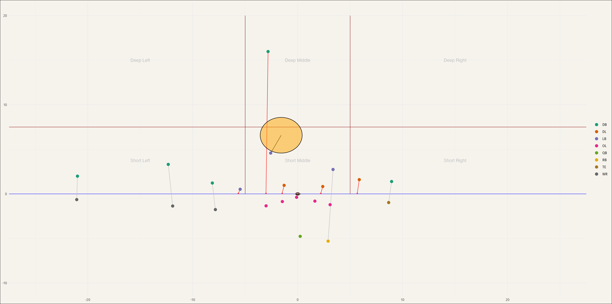
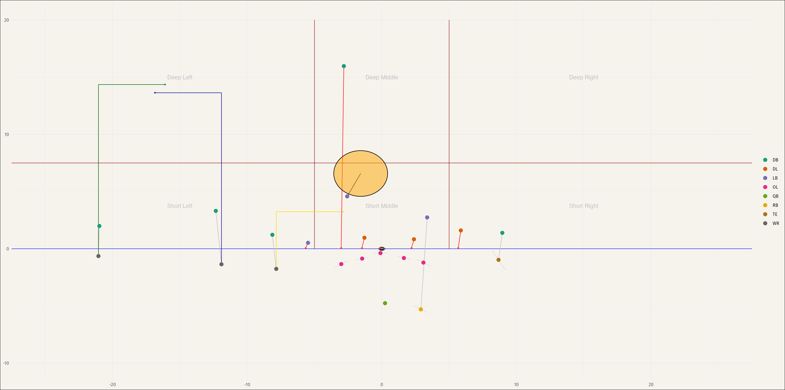

Be The QB
Be the QB: Optimizing Offensive Play Calls Based on Predicted Defensive Assignments
By Adam Koplik & Ian Fratarcangeli — NFL Big Data Bowl (Undergraduate Track)
Overview
This project aims to simulate the decision-making process of an NFL quarterback by predicting defensive assignments based on pre-snap positioning data, then using those predictions to identify the optimal offensive play call.
What started as an effort to predict overall defensive coverages (like Cover-2, Cover-3) evolved into predicting individual defender assignments on each play.
Data Sources
- NFL Big Data Bowl 2023 Player Tracking Data
- Pro Football Focus (PFF) coverage assignment labels
- Play-by-play and game metadata
Process Summary
Defensive Assignment Prediction
- Cleaned and processed tracking data, filtered to pass plays only.
- Simplified PFF coverage labels into 4 assignment types:
- Blitzers
- Man coverage
- Short zone
- Deep zone
- Standardized field direction and computed player distances from the ball.
- Built a Random Forest model in R to predict defender assignments based on player position, distance from the ball, formation, game situation, and other variables.
- Achieved high accuracy (83.5%) in predicting individual defensive roles.
Offensive Play Optimization
- Created an xGBoost Expected Points Added (xEPA) model to estimate play outcomes based on:
- Defensive assignments
- Pre-snap player locations
- Offensive personnel and assignments
- Defined a feasible region of possible offensive assignments per formation.
- Ran simulations to find the offensive player assignments that would maximize expected points based on predicted defensive assignments.
Key Findings
- The model favored passing plays ~97% of the time due to higher EPA values — a limitation reflecting real-world play-calling constraints.
- Deep-in routes for WR1 and varied route combinations for WR2/WR3 often produced the best expected outcomes.
- Defensive player positioning and assignments at the snap had a huge influence on play outcome expectations.
Tools Used
- R, RStudio
- RandomForest & xgboost libraries
- Caret for model tuning
- NFL Big Data Bowl player tracking data
Limitations
- Model excluded QB runs, option plays, and non-standard formations.
- Did not account for game context (clock management, momentum, fatigue).
- “Optimal” play calls were based solely on maximizing EPA — not always realistic or aligned with coaching strategy.
Visualizations

 
Full Report
Acknowledgements
Huge thanks to Prof. Chinthaka Kuruwita for his guidance on this project and for helping us grow as stats students.
Submitted for the NFL Big Data Bowl Undergraduate Track, Fall 2024.